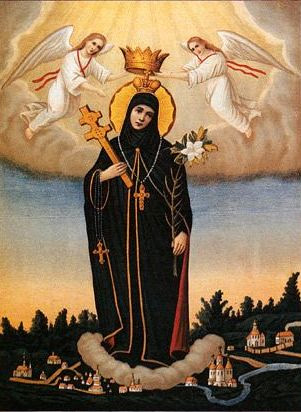

„Hoće li tko za mnom, neka se odreče samoga sebe, neka uzme svoj križ i neka ide za mnom.” (Mt 16,24)

Sveta Eufrozina Polocka (1110. – 1173.) bila je bjeloruska kneginja koja je odbila ugovoreni brak kako bi se zaredila u pravoslavnom manastiru. Prema predaji, nakon tri anđeoska ukazanja utemeljila je novi ženski manastir u Polocku. Njezin snažan duh privukao je u redovništvo i njezinu sestru te brojne plemkinje koje su svoje bogatstvo darovale Crkvi, posvetivši se duhovnom životu.
Tijekom života dala je sagraditi dvije crkve, od kojih se crkva sv. Spasitelja smatra vrhuncem rane bjeloruske arhitekture. Uz njezino ime veže se i Križ sv. Efrosinije, remek-djelo zlatarstva koje je nestalo tijekom Drugog svjetskog rata. Poznata je kao jedina svetica djevica kod istočnih Slavena te uživa status jedne od najvažnijih povijesnih osoba u bjeloruskoj povijesti.
U dubokoj starosti ostvarila je želju da posjeti Jeruzalem, gdje je 1173. godine preminula i bila pokopana u manastiru sv. Teodozija. Danas se slavi kao zaštitnica Bjelorusije, a njezino se ime štuje kao simbol prosvjetiteljstva, nesebičnosti i nepokolebljive vjere.